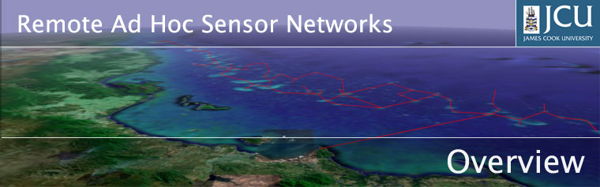

Why are ad hoc networks so great?
Data collection from remote locations is traditionally performed using high power radio links, which require bulky radios and batteries, and a costly radio licence.
An ad hoc network is a wireless network which requires no base station - nodes within range discover each other to form a peer-to-peer network, and provide their own network infrastructure in a distributed fashion.
An ad hoc network divides this distance into several smaller hops, which in total use far less power. This allows each node to be smaller and have a longer battery life. Automatic configuration allows networks to be quickly and easily deployed, and adapt to changing network conditions.
Back To Top
Oooh, tell me more...
|
Crossbow "Mica" Motes
Photo courtesy of Crossbow |
| |
Ad hoc sensor networks (A subclass of ad hoc networks) are currently a very active area of research at many institutions
around the world. They are typically characterised by:
- Dense, well connected topologies
- Low traffic rates
- Low power radios
- Long battery life
- Automatic and adaptive configuration
The sensor nodes integrate data collection, data
processing and communications functions into a tiny package with long battery life. Some good examples of existing devices include Berkeley Smart Dust, and Crossbow Motes. There are also a variety of existing ad hoc networking protocols, with most research focused on routing.
Back To Top
Hasn't it already been done?
Not really.
Little or no research has been specifically conducted into remote ad hoc
sensor networks, which are distinguished from typical ad hoc sensor networks by the following:
- Remote and inacessible locations
- Large geographical areas
- Sparse, minimally connected topologies
- Large link distances (up to 10km)
- Exposure to environmental conditions
The difficulty of maintenance in inacessable locations demands maximum battery life, which in turn requires power consumption to be minimised. Rain attenuation may cause varying link quality, which is particularly problematic in tropical climates. The large link distances introduce more significant propagation delays, and a generally poorer signal-to-noise ratio (SNR).
Back To Top
Where is this going to be used?
|
Davies Reef remote weather station
Photo courtesy of AIMS |
| |
The target application for this project is collecting data from environmental monitoring stations on the Great Barrier Reef, and relaying it back to the Australian Institute of Marine
Sciences (AIMS) at Cape Cleveland (See banner image). Data is currently collected on manual visits, and with long range radio links. It is proposed to implement an ad hoc network with nodes on intermediate reefs, which would make data collection much more economical, effectively increasing the reach of the system. The advantages include smaller nodes, increased battery life and hence reduced maintenance, and not requiring a radio licence.
Another proposed application is monitoring water trough levels on a large cattle property. In this scenario, the key advantage of ad hoc networking is the ease of deployment, allowing the farmer to install and reconfigure a system with little or no technical support.
Again, rapid deployment would make ad hoc networks suitable for quickly reestablishing communication to isolated commmunities in the wake of a natural disaster, or perhaps rapidly deploying a temporary local communications system on a battlefield. In the latter case, the low transmission power reduces the chances of communications being intercepted by the enemy.
Back To Top